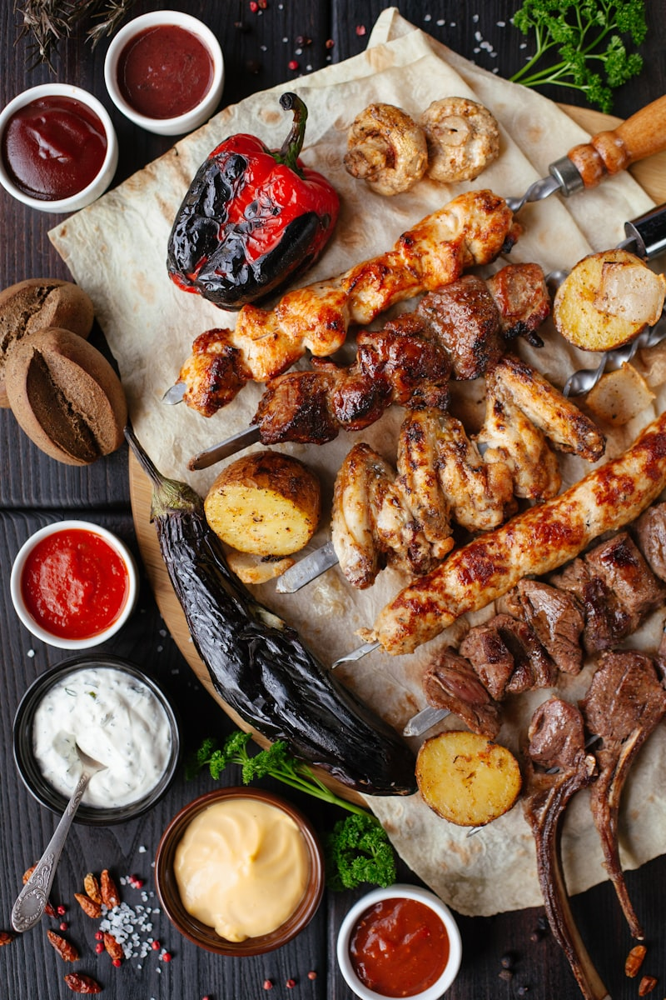

Overview

The Terracotta Army (兵马俑) is one of the most significant archaeological discoveries of the 20th century. Discovered in 1974 by local farmers digging a well near Xi'an, this vast underground army was created to protect Qin Shi Huang — China's first emperor — in the afterlife. Each warrior is uniquely crafted with individual facial features, hairstyles, and expressions, making this one of the most remarkable artistic achievements of the ancient world.
Qin Shi Huang unified China in 221 BC and commissioned this massive project involving an estimated 700,000 workers. The warriors were originally painted in vivid colors, though most pigment has faded after exposure to air during excavation.
🇯🇵 The Discovery Story
When news of the discovery broke in 1974, it sent shockwaves through the global archaeological community — including Japan. Japanese media covered the find extensively, and in 1975, a special exhibition of terracotta warriors in Tokyo drew over 1.5 million visitors, making it one of the most popular archaeological exhibitions in Japanese history. The bond between Xi'an and Nara (both ancient capitals) was strengthened through this shared cultural heritage.
The Three Pits
Pit 1 — The Main Force
The largest pit at 14,260 m², containing approximately 6,000 warriors and horses arranged in battle formation. This is the most impressive view — rows upon rows of infantry, archers, and charioteers standing in trenches. The scale is simply overwhelming.
Pit 2 — The Elite Guard
A smaller but more diverse force of around 1,300 warriors, including cavalry, archers, and chariots. This pit reveals the military strategy and unit organization of the Qin army. Many warriors here are displayed in their excavated positions.
Pit 3 — The Command Center
The smallest pit with about 68 warriors, believed to be the army's headquarters. High-ranking officers are positioned here, along with a ceremonial chariot. This pit shows the command structure of the Qin military.
Warrior Types
- Infantry (步兵): The backbone of the army, each with unique facial features
- Archers (弓兵): Kneeling and standing positions, originally holding real bronze weapons
- Cavalry (骑兵): Mounted warriors with horses, wearing distinctive boots
- Charioteers (车兵): Drivers and warriors standing on wooden chariots
- Generals (将军): Taller, more elaborately armored figures with commanding presence


Nearby Attractions
- Emperor Qinshihuang's Mausoleum: The actual tomb mound, yet to be fully excavated, said to contain a replica of the empire with mercury rivers
- Xi'an City Wall: The best-preserved ancient city wall in China, you can cycle the full 14 km circuit
- Muslim Quarter: Vibrant street food scene reflecting Xi'an's Silk Road heritage
- Big Wild Goose Pagoda: A 7th-century Buddhist pagoda, symbol of Xi'an
Practical Information
Opening Hours
- March – November: 8:30 – 18:00 (last entry 17:00)
- December – February: 8:30 – 17:30 (last entry 16:30)
Tickets
- Peak season (Mar–Nov): ¥120
- Off-peak (Dec–Feb): ¥60
- Includes entrance to all three pits and the museum
Getting There
From Xi'an, take Tourist Bus 5 (306) from the east side of Xi'an Railway Station. The journey takes about 1 hour. Alternatively, take a taxi (approximately ¥150 one way).
Tips for Japanese Visitors
- Book tickets online in advance — daily visitor limits apply
- Arrive early to avoid tour groups (before 9 AM)
- Start with Pit 1 for maximum impact, then visit Pit 2 and Pit 3
- The museum at the entrance provides excellent context — visit it first
- Japanese audio guides available
- Combine with a day trip to Xi'an City Wall and Muslim Quarter